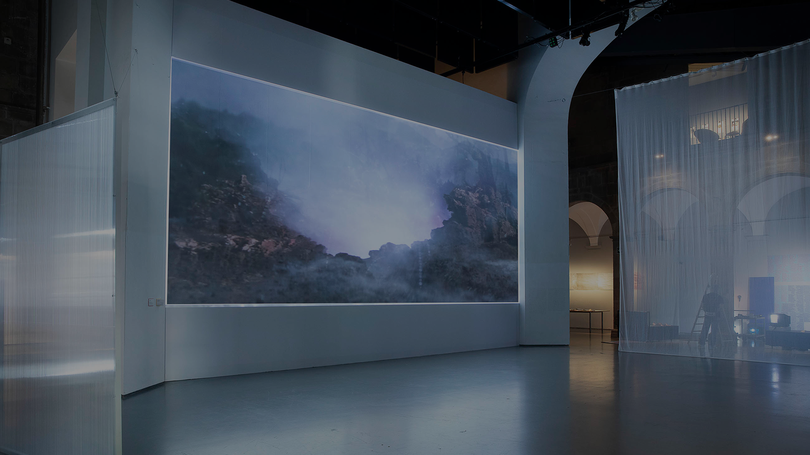
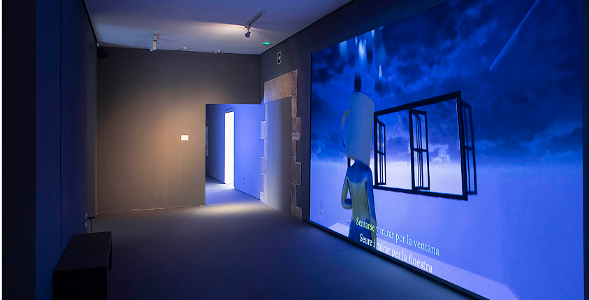

Properes activitats

Corazón que late
10.03.2026 19h

FLUX SUMMA
24.03.2026 19h

Bang Bang Stefi!
03.03.2026 19h

Entre cineastes
10.04.2026 19h
1
2
3
4

Santa Mònica
Centre d'Arts Contemporànies
La cultura com a procés,
no com a resposta

El Santa Mònica és un centre d'arts contemporànies dedicat a la recerca, l'experimentació i la producció de pensament crític. Entén la cultura com un procés viu i col·lectiu, on la pràctica artística esdevé espai de debat, transformació i construcció compartida.
Saber més del centre
Xiuxiueigs, Bullici i Paradoxes és una exposició que reflexiona sobre el paper de la veu i el llenguatge en l'espai públic.
A través de diferents propostes artístiques, explora la relació entre el silenci, el soroll i les contradiccions que formen part dels relats col·lectius. La mostra convida a qüestionar com s'articulen les veus, qui és escoltat i quin lloc ocupa cadascú dins del discurs contemporani.
10.03.2026 19h
24.03.2026 19h
03.03.2026 19h
10.04.2026 19h
Email:
santamonica@gencat.cat
Tel.:
(+34) 935 671 110
Adreça:
La Rambla, 7. 08002 Barcelona
Si vols aprofundir en les nostres propostes i establir un diàleg obert amb el centre, et convidem a fer-nos arribar la teva consulta a través del formulari de contacte.